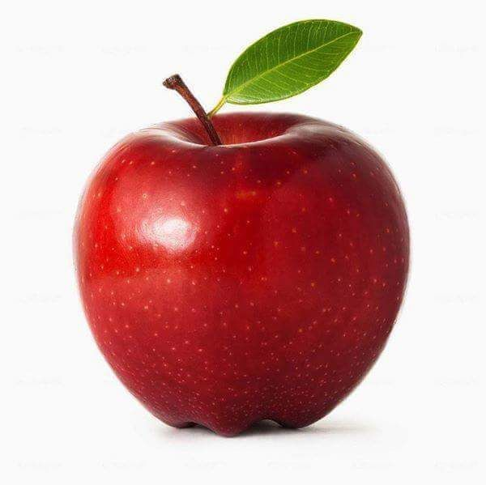
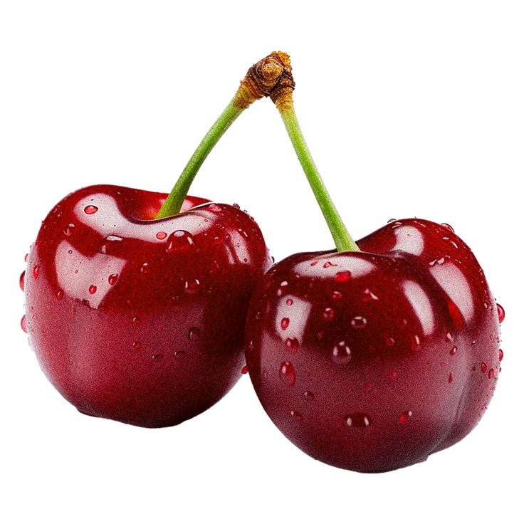
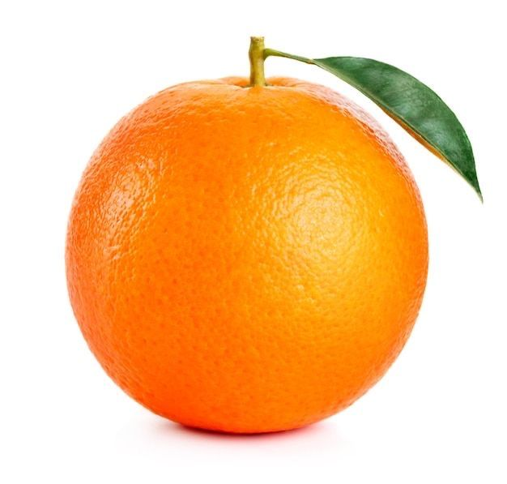
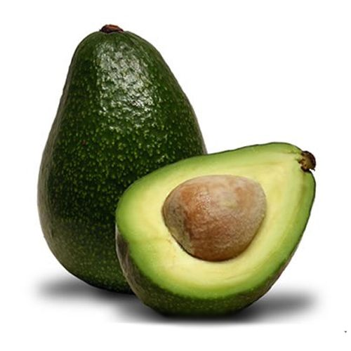

<section class="portfolio">
    <div class="container">
        <div class="portfolio-header">
            <h2>Фрукти та овочі</h2>
            
            <p>Користь для організму</p>
        </div>
         <div class="portfolio-grid">
            <div class="portfolio-card">
                
                <div class="card-content">
                    <h3>полуниця</h3>
                    <p>Низькокалорійний десерт, який прокачує твій організм.
Низька калорійність: На 100 г всього ~32 ккал. Ідеально, коли хочеться солодкого на дієті.
Марганець для кісток: Допомагає зміцнювати кісткову тканину та підтримує метаболізм.
Еллагова кислота: Потужний антиоксидант, який захищає клітини від пошкоджень та сповільнює процеси старіння.</p>
         <div class="portfolio-grid">
            <div class="portfolio-card">
                
                <div class="card-content">
                    <h3>яблуко</h3>
                    <p> Найдоступніший суперфуд, який працює непомітно, але ефективно.
Пектин (клітковина): Працює як "мітла" для кишечника, виводячи токсини та допомагаючи контролювати апетит.
Здоров'я легень: Дослідження показують, що антиоксидант кверцетин у яблуках покращує роботу дихальної системи.
Чисті зуби: Жевание яблук стимулює вироблення слини та механічно очищує емаль від нальоту.</p>
                    <a href="#" class="view-btn">View Study <span>→</span></a>
        <div class="portfolio-grid">
            <div class="portfolio-card">
                
                <div class="card-content">
                    <h3>вишня</h3>
                    <p> Вишня — це маст-хев для атлетів та тих, хто має проблеми зі сном.
Відновлення м'язів: Вишня містить антоціани, які зменшують запалення та біль у м'язах після жорсткого тренування (ефект схожий на легкий ібупрофен).
Глибокий сон: Це природне джерело мелатоніну. Жменя вишні ввечері допоможе швидше вирубитися і краще виспатися.
Захист серця: Знижує рівень сечової кислоти та корисна для судин.</p>
                    <a href="#" class="view-btn">View Study <span>→</span></a>
        <div class="portfolio-grid">
            <div class="portfolio-card">
                
                <div class="card-content">
                    <h3>апельсин</h3>
                    <p> Це не просто джерело вітаміну С, а справжня бомба для відновлення.
Синтез колагену: Вітамін С критично важливий для зв'язок і суглобів (актуально при фізичних навантаженнях) та здоров'я шкіри.
Контроль тиску: Завдяки гесперидину та калію допомагає тримати судини в нормі.
Засвоєння заліза: Якщо їси м'ясо або гречку, запивай це (або заїдай) апельсином — так залізо засвоїться набагато краще.</p>
                    <a href="#" class="view-btn">View Study <span>→</span></a>
                </div>
            </div>
        <div class="portfolio-grid">
            <div class="portfolio-card">
                
                <div class="card-content">
                    <h3>Авокадо</h3>
                    <p> унікальне тим, що це чи не єдиний фрукт, де майже немає цукру, зате повно корисних олій.
Здорове серце: Воно забите мононенасиченими жирними кислотами (олеїнова кислота), які знижують рівень «поганого» холестерину.
Чітка шкіра та волосся: Завдяки вітаміну E та жирам, авокадо буквально живить тебе зсередини, роблячи шкіру еластичною.
Максимум енергії без стрибків цукру: У нього низький глікемічний індекс, тому ти довго залишаєшся ситим і без «інсулінових гойдалок».
Клітковина: В одному середньому авокадо її близько 10-13 г, що допомагає травленню працювати як годинник.</p>
                    <a href="#" class="view-btn">View Study <span>→</span></a>
                </div>
            </div>

            <div class="portfolio-card">
                
                <div class="card-content">
                   
                    <h3>Банан</h3>
                    <p>ідеальний перекус, особливо якщо ти займаєшся спортом або багато вчишся.
Джерело калію: Калій необхідний для нормальної роботи серця та м'язів. Він допомагає уникати судом після тренувань.
Швидкий заряд енергії: Містить три види натуральних цукрів (сахароза, фруктоза і глюкоза) у поєднанні з клітковиною. Це дає миттєвий, але тривалий приплив сил.
Гарний настрій: У бананах є триптофан — амінокислота, яка в організмі перетворюється на серотонін (гормон щастя). Реально допомагає розслабитися та почуватися краще.
Допомога шлунку: Банани мають антацидний ефект (знижують кислотність), тому вони корисні при печії або подразненнях слизової.</p>
                    <a href="#" class="view-btn">View Study <span>→</span></a>
                </div>
            </div>

            </div>

        <div class="portfolio-footer">
            <button class="load-more">View Projects</button>
        </div>
    </div>
</section>0